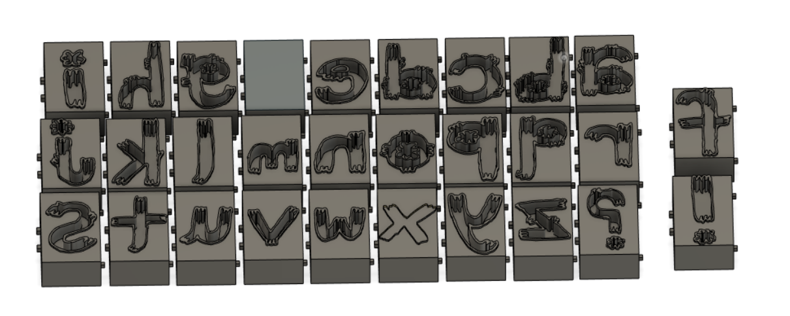

<!DOCTYPE html>
<html lang="en">
<html>

<head>
<style>
.p1 {
  font-family: "Times New Roman", Times, serif;
}

.p2 {
  font-family: Arial, Helvetica, sans-serif;
}

.p3 {
  font-family: "Lucida Console", "Courier New", monospace;
}
</style>
</head>

<body>

</body>
</html>


<title>PS70: Intro to Digital Fabrication </title>
<link href="https://cdn.jsdelivr.net/npm/bootstrap@5.1.1/dist/css/bootstrap.min.css" rel="stylesheet">
<link href="../style.css" rel="stylesheet">

<nav class="navbar navbar-expand-sm navbar-light bg-light">
  <div style="align-items: left; justify-content:left;" class="container-fluid">
    <h3 class="nav-title"> PS70: Intro to Digital Fabrication</h3>
    <div class="navbar-nav">
      <h4></h4>
      <h4><a class="nav-link" href="../index.html">Home</a></h4>
      <h4><a class="nav-link" href="../about.html">About Me</a></h4>
    </div>
  </div>
</nav>

<body>


<xmp style="display:none;">
<br> 
<p class="p3">

  <head>
<style>
body {
  background-color: #f0edfa;
}
</style>
</head>
<body>

 <b> Week 5: 3D printing </b> <br>

<b>Idea: Letterpress type, such as: </b><br>

I think for actual letterpress type that could go through a printing press, it would be better to CNC or laser cut wood, but I wanted to test out 3D printing fine lined bubble letters, and small sized font. Also, potentially using these 3D prints to make molds for casting. 
<br> 

<b>Goals:</b> <br>
-<b>Have the type link together efficiently, like legos </b> (traditional type do not link together and are kept in place with a combination of metal and wood pieces called 'furniture' and frames. The end result is sometimes sturdy but takes time to assemble, and even then will slip out of place. You also can't carry the grouped type around very easiy without specialized clamps) <br>
-<b> ~Magnets~ </b> put magnets on the bottom of the type for sturdiness - most presses have steel beds <br>
-<b> Bubble letters, custom font </b> you just don't get a lot of bubble letter fonts with letterpress type, plus I wanted small(ish) custom font <br>

<b> Process: </b> <br>
-Here's the files: <a href="letterpress.stl" download>STL File </a> <br>
<a href="letterpress.f3d" download>Fusion360 File </a> <br>
<a href="letterpress.gcode" download>Sliced Prusa File </a>
<br>

First I hand drew my font (black pen - 0.18 mm, white paper) and scanned it (300DPI, black and white image) into Illustrator. I drew my letters backwards to begin with, but just realized while typing this that I could have drawn them right-reading and flipped the image in Illustrator. Oh well. I converted the scanned lines into vectors using Image Trace (Object > Image Trace > Make and Expand), and exported the file as a .DXF so I could insert it into Fusion360. <br>

<a href="text.dxf" download> DXF file of just the font </a> <br>

In Fusion360, I had my bases already created and laid out so I could just drag each letter onto its base. As I write this again I realize I could have laid out the letters in Illustrator so they automatically fit on the laid out bases in Fusion 360 but I guess that's a solution for future me. I ran into a small issue of having to resize each letter to fit on its base since I think I accidentally had set my dimensions in Illustrator to inches, but it was a fairly quick adjustment. <br>

 <br>

After I laid out each letter on the top face of the bases, I extruded/cut the blank spaces so only the outlines of the letters were raised. And after that, I readied the file in Prusa for 3D printing. <br>


</p>

</xmp>
</body>

<script src="../strapdown.js"></script>
<script src="https://cdn.jsdelivr.net/npm/bootstrap@5.0.2/dist/js/bootstrap.bundle.min.js" ></script>

</html>